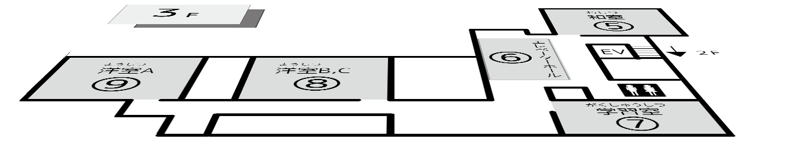
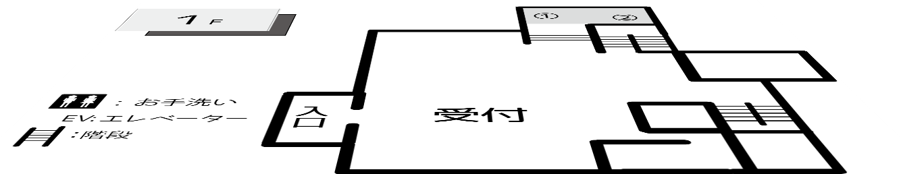

みらい研究室実行委員会
みらい研究室実行委員会企画案内



1.地球をENJOY!
地球科学研究部
2.無限の星空の中へようこそ
Ⅰ部Ⅱ部天文研究部
3.生き物の秘密を解き明かそう！
Ⅱ部研究会生物研究部
4.花咲インクともくねんさん
文具研究同好会
5.光をつかった工作をしよう！
サイエンスコミュニケーションサークル chibi lab.
6.模型飛行機を作ろう
AircraftMakers
7.三分化学実験
Ⅱ部化学研究部
8.見る「科学」、触る「科学」
Ⅰ部化学研究部
9.身近な化学を楽しく学ぼう
理工学部化学研究会
左上の地図の数字、または、右上の企画名を押してください
地球をENJOY!
地球科学研究部
地球科学についての展示を行っております。
竜巻、鉱物展示、落雷の観察、霧箱・風力の観察があります。
| No. | 企画名 | 企画形態 | 対象年齢 |
| 1 | 竜巻装置展示 | 実験 | 6～ |
| 2 | 霧箱実験 | 実験 | 8～ |
| 3 | 鉱物展示 | 実験 | 6～ |
| 4 | 鉱物展示 | 実験 | 6～ |
| 5 | 風力について | 実験 | 6～ |
無限の星空の中へようこそ
Ⅰ部Ⅱ部天文研究部
星の写真や霧箱などを展示しています。
目玉はプラネ上映！簡単なクイズもありますので、ぜひお越し下さい。
| No. | 企画名 | 企画形態 | 対象年齢 |
| 1 | プラネタリウム上映 | 展示 | 全年齢 |
| 2 | 星野写真展 | 展示 | 全年齢 |
| 3 | 霧箱体験 | 実験 | 全年齢 |
| 4 | 宇宙論スケッチブック | 展示 | 中学生以上 |
| 5 | 展示 Box | 実験 | 全年齢 |
| 6 | 天文グッズ | 展示 | 全年齢 |
| 7 | しおり配布 | 展示 | 全年齢 |
生き物の秘密を解き明かそう！
Ⅱ部研究会生物研究部
化石レプリカをつくってみませんか？
昆虫、植物何でもござれ！作って触れて学べる、楽しいブースです！
| No. | 企画名 | 企画形態 | 対象年齢 |
| 1 | 着色料の不思議 | 展示 | 全年齢 |
| 2 | 顕微鏡 | 展示 | 全年齢 |
| 3 | 化石レプリカ作成 | 制作 | 小学生 |
| 4 | 生体と標本展示 | 展示 | 全年齢 |
花咲インクともくねんさん
文具研究同好会
木くずの粘土『もくねんさん』でストラップなどを作れるもくねんさんコーナーなど！
ご来場お待ちしてます！
| No. | 企画名 | 企画形態 | 対象年齢 |
| 1 | もくねんさん | 制作 | 小学校低学年 |
| 2 | 封蝋体験 | 実験 | 小学校高学年 |
| 3 | 花咲(はなさき)インク | 実験 | 中～高学年 |
光をつかった工作をしよう！
サイエンスコミュニケーションサークル chibi lab.
ちびらぼでは光に関係した工作をします！
私達と一緒に工作を楽しみましょう♪
| No. | 企画名 | 企画形態 | 対象年齢 |
| 1 | ふしぎな光の箱 | 制作 | 小学校中学年～ |
| 2 | かんたん万華鏡 | 制作 | 小学校低学年～ |
| 3 | おばけライト | 制作 | 幼稚園生～ |
模型飛行機を作ろう
AircraftMakers
自分の力で模型飛行機を作ってみませんか？
うまくいけば紙飛行機よりずっと遠くまで飛ぶ模型飛行機が作れます！！
| No. | 企画名 | 企画形態 | 対象年齢 |
| 1 | 模型飛行機製作 | ブースで作業 来場者主体 | ４才?（はさみが使える歳） |
三分化学実験
Ⅱ部化学研究部
小さなお子さんにも楽しんでもらえるような簡単で楽しい化学実験をやっています。
実験で作った物は持ち帰ることができます。
| No. | 企画名 | 企画形態 | 対象年齢 |
| 1 | 入浴剤 | 実験 | 全年齢 |
| 2 | 芳香剤 | 実験 | 全年齢 |
| 3 | 人工いくら | 実験 | 全年齢 |
| 4 | スタンプ | 実験 | 全年齢 |
見る「科学」、触る「科学」
Ⅰ部化学研究部
化学をより身近に感じてもらえるように、
『作って、触って、見る』が楽しめる実験をご用意いたしました。
| No. | 企画名 | 企画形態 | 対象年齢 |
| 1 | ダイラタンシー | 製作 | 小学生低学年～ |
| 2 | スライム | 製作 | 小学生低学年～ |
| 3 | 不思議な液体 | 実験 | 小学生高学年～ |
身近な化学を楽しく学ぼう
理工学部化学研究会
私たちの身近にあるものを使って、ちょっと不思議な体験をしてみよう！
| No. | 企画名 | 企画形態 | 対象年齢 |
| 1 | スーパーボールを作ってみよう！ | 実験 | 全年齢 |
| 2 | 電気ペンでお絵かきしてみよう！ | 実験 | 全年齢 |
| 3 | ショウノウ船を作ってみよう！ | 実験 | 全年齢 |